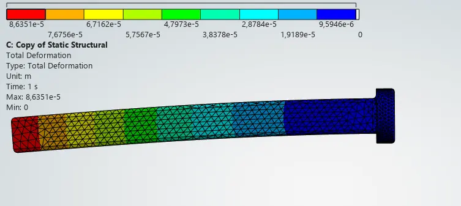
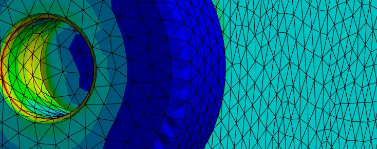
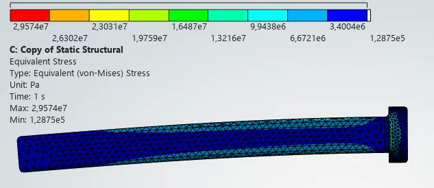
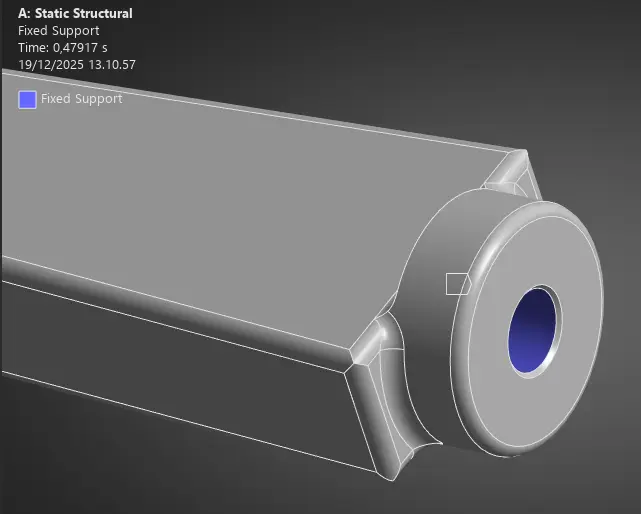
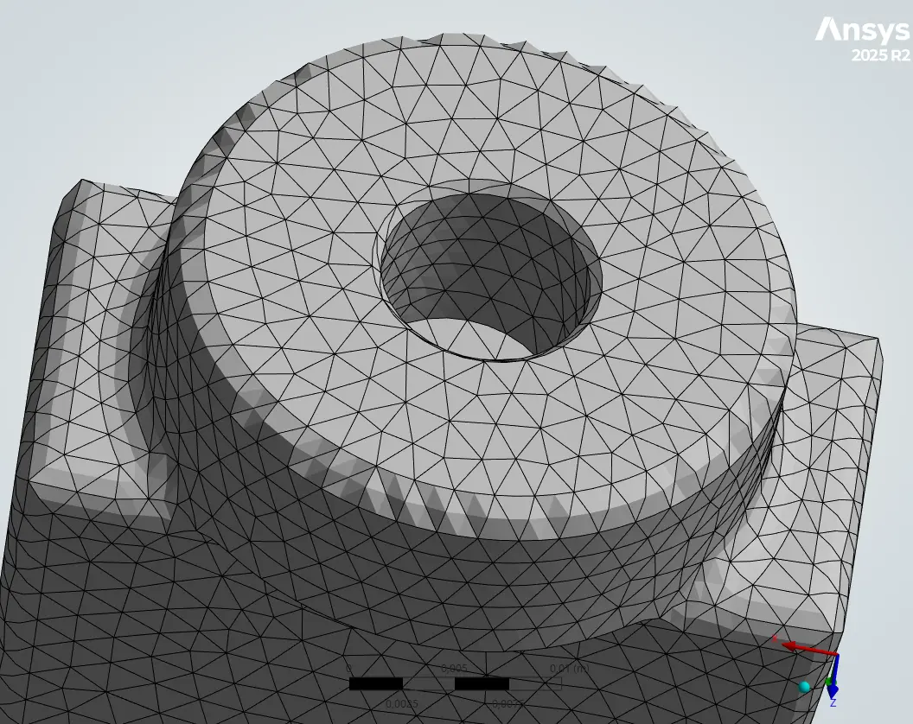
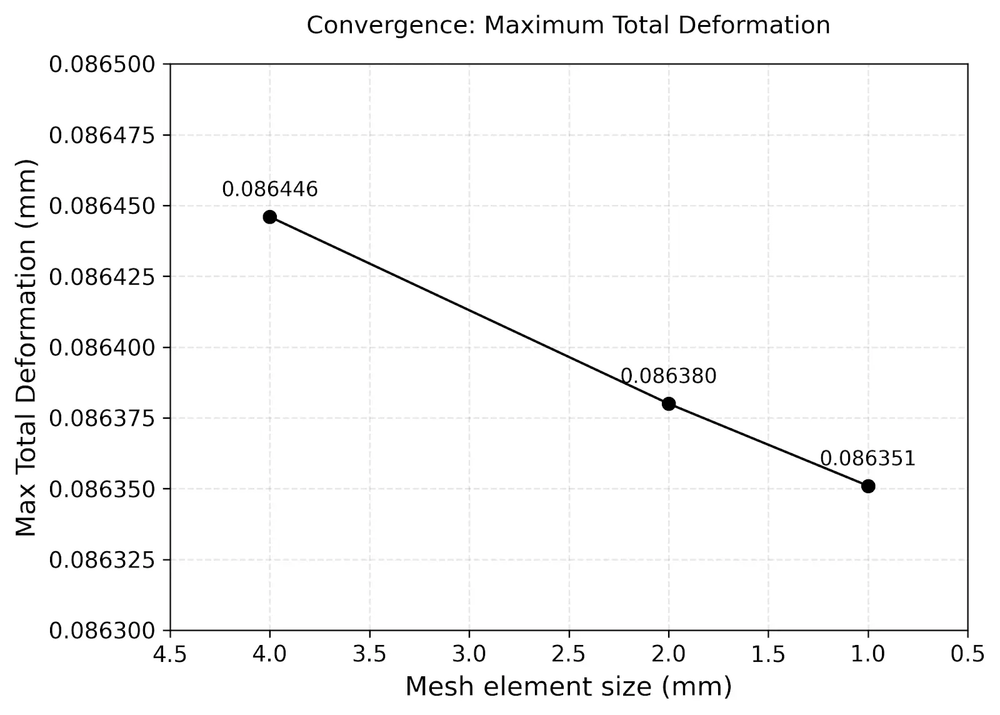
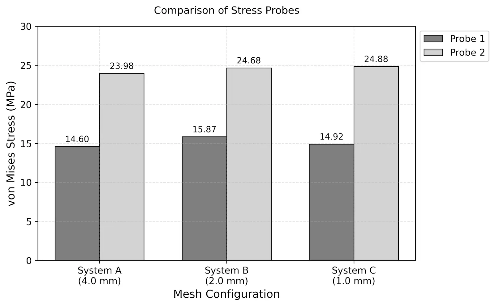

← All projects
University
Robotic arm link FEA
Finite element analysis of a self-designed robotic arm link under a 100 N bending load, with a mesh convergence study.
The project
I designed the last link of a robotic arm in Ansys Discovery and analysed it in Ansys Mechanical: a fixed mounting face and a 100 N load at the hand, to create realistic bending.
Three meshes (4, 2 and 1 mm) were compared to check that the result does not depend on the mesh, and two stress probes away from the concentrations gave a consistent comparison between them.
What I did
- Derived the strong and weak forms of linear elasticity and a bending sanity-check model before trusting the solver.
- Ran the mesh convergence study for deformation and von Mises stress.
- Found the highest stresses at the mounting region and the largest deflection at the loaded end, as the beam model predicts.
Under the hood
Ansys Discovery + Mechanicalgeometry, meshing, static structural solution and probes.
Pythonconvergence plots.
Renders, results and photos





